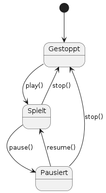
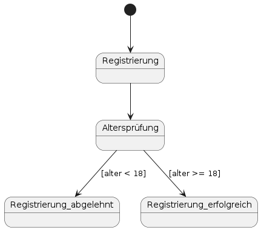

Definition
Ein **Zustandsdiagramm** (Statechart) beschreibt die Zustände eines Objekts und die Übergänge zwischen diesen Zuständen.
Zweck & Verwendung
- Verhaltensmodellierung: Abbildung des Lebenszyklus von Objekten
- Analyse: Erkennung gültiger und ungültiger Zustandswechsel
- Dokumentation: Klarer Überblick über Zustandslogik für Entwickler und Tester
Praxisrelevanz
- Vermeidung von unvorhergesehenen Zustandsfehlern
- Grundlage für ereignisgesteuerte Implementierungen
- Bessere Testabdeckung durch Zustandsübergangsdiagramme
Grundelemente
- Initialzustand: Gefüllter Kreis
- Zustand: Rechteck mit abgerundeten Ecken und Zustandsname
- Endzustand: Gefüllter Kreis in Kreis
- Transition: Pfeil mit Ereignis/Bedingung
- Guard-Bedingung: `[Bedingung]` am Übergang
- Aktion: `/Aktion()` am Übergang
- Composite States: Hierarchische Zustände mit Sub-Zuständen
- Fork/Join: Balken zur Parallelisierung und Synchronisation
Beispiel: Musikplayer-Zustände

Beispiel mit Wächterausdrücken: Benutzerregistrierung mit Altersprüfung

OOP-Bezug
Zustandsdiagramme verknüpfen sich mit Klassen, indem sie das Verhalten von Objekten je nach Attributen und Ereignissen strukturieren.
Tools & Links
- PlantUML: Statechart-Syntax
- Mermaid: Markdown-integriert
- UML-Startseite